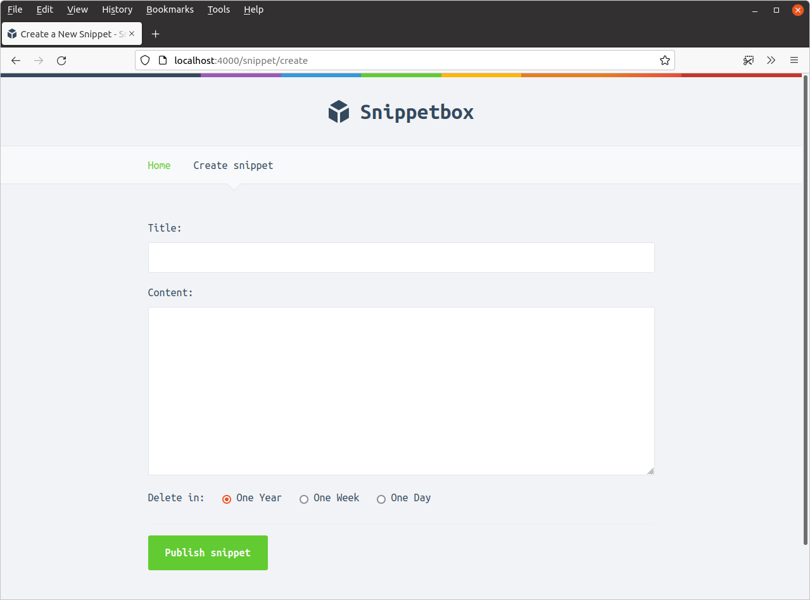

راهاندازی یک فرم HTML
بیایید با ایجاد یک فایل جدید ui/html/pages/create.tmpl برای نگهداری HTML فرم شروع کنیم:
$ touch ui/html/pages/create.tmpl
… و سپس نشانهگذاری زیر را با استفاده از همان الگوهای قالب که قبلاً در کتاب استفاده کردیم، اضافه کنید.
{{define "title"}}Create a New Snippet{{end}}
{{define "main"}}
<form action='/snippet/create' method='POST'>
<div>
<label>Title:</label>
<input type='text' name='title'>
</div>
<div>
<label>Content:</label>
<textarea name='content'></textarea>
</div>
<div>
<label>Delete in:</label>
<input type='radio' name='expires' value='365' checked> One Year
<input type='radio' name='expires' value='7'> One Week
<input type='radio' name='expires' value='1'> One Day
</div>
<div>
<input type='submit' value='Publish snippet'>
</div>
</form>
{{end}}
تا اینجا چیز خاصی در این مورد وجود ندارد. قالب main ما شامل یک فرم HTML استاندارد است که سه مقدار فرم را ارسال میکند: title، content و expires (تعداد روزها تا انقضای اسنیپت). تنها چیزی که واقعاً باید به آن اشاره کنیم، ویژگیهای action و method فرم است — اینها را طوری تنظیم کردهایم که فرم هنگام ارسال، دادهها را به URL /snippet/create POST کند.
حالا بیایید یک لینک جدید 'ایجاد اسنیپت' به نوار ناوبری برنامه خود اضافه کنیم، تا با کلیک روی آن کاربر به این فرم جدید برود.
{{define "nav"}}
<nav>
<a href='/'>Home</a>
<!-- Add a link to the new form -->
<a href='/snippet/create'>Create snippet</a>
</nav>
{{end}}
و در نهایت، باید handler snippetCreate را بهروزرسانی کنیم تا صفحه جدید ما را به این صورت رندر کند:
package main ... func (app *application) snippetCreate(w http.ResponseWriter, r *http.Request) { data := app.newTemplateData(r) app.render(w, r, http.StatusOK, "create.tmpl", data) } ...
در این مرحله میتوانید برنامه را راهاندازی کنید و http://localhost:4000/snippet/create را در مرورگر خود بازدید کنید. باید یک فرم ببینید که به این صورت است:
